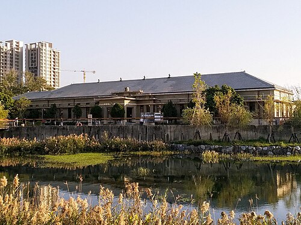

一、糖廠簡介
台中帝國製糖廠位於台中市東區，自 1935 年興建以來，成為市民認識東區工業發展與糖業歷史的重要地點。 園內結合星泉湖、歷史建築與親水綠地，讓人能在城市生活中找到散步與休息的空間。
園內最具代表性的景點是星泉湖畔的帝國製糖廠臺中營業所。這座建築於日治時期作為糖廠辦公核心，戰後由台糖接收，後來登錄為歷史建築， 也是台中舊城區再生與轉型的重要地標之一。
從歷史建築的風貌到湧泉公園的湖畔步道，台中帝國糖廠像一份可以慢慢閱讀的城市筆記。本篇以景點整理與建議散步順序， 介紹這座結合工業記憶與生態景觀的歷史園區。
園區地址：台中市東區樂業路 30 號。
閱讀重點：糖業歷史、星泉湖景觀與生態綠地。
二、景點特色與散步順序
值得留意的三個特色
- 歷史建築：臺中營業所連結了糖廠與東區產業發展的歷史。
- 湖畔風景：星泉湖與臺中營業所形成園區具有辨識度的景觀。
- 城市綠地：園內的環湖步道與植栽提供接近自然的空間。
建議散步順序
以下是本報導規劃的散步建議，並非官方指定路線。
- 進入園區後，先閱讀現場導覽資訊，確認各景點位置。
- 走到星泉湖畔，觀察臺中營業所的外觀與水面倒影。
- 前往帝國製糖廠臺中營業所內部與周邊，閱讀解說牌並認識糖廠的歷史。
- 沿湧泉公園環湖步道散步，最後在休憩空間整理今日的觀察。
三、景點比較表
| 景點名稱 | 主要特色 | 建議觀察重點 |
|---|---|---|
| 歷史建築帝國製糖廠臺中營業所 | 建於 1935 年的歷史建築 | 建築外觀、日治時期折衷主義風格及糖業歷史解說 |
| 星泉湖 | 臺中營業所所在的生態池 | 湖面倒影、親水生態及湖畔景觀 |
| 湧泉公園環湖步道 | 結合糖業鐵道意象與親水綠廊的步道 | 鐵道遺構意象、生態植栽及現場歷史解說 |
四、帝國製糖廠臺中營業所照片

五、影音報導
透過以下影片探索台中帝國糖廠。
若播放器無法播放，請 在 YouTube 觀看帝國糖廠介紹影片（另開分頁）
影片為外部作者發布的場地介紹，現場狀況請以最新官方資訊為準。
六、資料來源
本報導依下列資料整理，散步順序與觀察建議由示範作者規劃。
資料整理日期：2026 年 10 月 7 日。